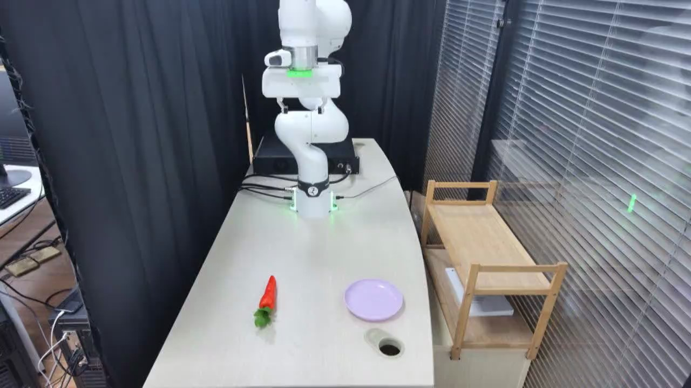

TAVP · 008_franka_pick_and_place_failure_case_failure
Franka pick and place failure case failure

Visual review action_review.json
{
"video_id": "008",
"review_method": "Visual inspection of every second decoded frame across the entire MP4 plus native-resolution transition frames, followed by native initial PNG",
"review_source_video": "/Users/nijiachen/Downloads/Robotvideo/TAVP/008_franka_pick_and_place_failure_case_failure/original/video.mp4",
"source_frame_count": 897,
"source_fps": 30.0,
"inspected_frame_stride": 2,
"inspected_sampled_frame_count": 449,
"reviewed_contact_sheets": [
"sheet_001.jpg",
"sheet_002.jpg",
"sheet_003.jpg",
"sheet_004.jpg",
"sheet_005.jpg",
"sheet_006.jpg",
"sheet_007.jpg",
"sheet_008.jpg"
],
"native_detail_frames": [
180,
220,
232,
240,
246,
254,
280,
330,
380,
430,
456,
480,
540,
640,
646,
650,
654,
660,
676,
682,
688,
700,
720,
738,
752,
766,
780,
828,
896
],
"initial_scene": "A white articulated robot is mounted at the rear of a pale tabletop, with its empty two-finger gripper raised above the workspace. An orange-red carrot with green leaves lies near the front-left, its narrow tip pointing toward the robot and its leaves toward the camera. An empty round purple plate is to its right. A circular cable hole is near the table front-right; black curtains, silver window blinds, cables and a small wooden shelf surround the workspace.",
"observed_sequence": [
{
"start_frame": 0,
"end_frame_inclusive": 232,
"action": "The empty gripper moves forward from its raised starting pose and descends around the carrot narrow tip. The carrot and purple plate remain on the tabletop.",
"confidence": "high"
},
{
"start_frame": 233,
"end_frame_inclusive": 456,
"action": "The fingers close near the carrot tip. The carrot changes angle beneath the low gripper, swinging from a diagonal with the leaves toward screen-right to one with the leaves toward screen-left, while the tip remains held near the fingers.",
"confidence": "high"
},
{
"start_frame": 457,
"end_frame_inclusive": 540,
"action": "The robot raises the carrot by its narrow tip; the thicker leafy end hangs downward as the carrot clears the tabletop. The gripper begins carrying it toward the plate on the right.",
"confidence": "high"
},
{
"start_frame": 541,
"end_frame_inclusive": 650,
"action": "The arm carries the hanging carrot rightward and lowers it beside the plate. The carrot is positioned in front of and to the left of the plate, rather than centered over it.",
"confidence": "high"
},
{
"start_frame": 651,
"end_frame_inclusive": 660,
"action": "The fingers open and release the carrot. It drops a short distance onto the tabletop outside the plate, with the green leaves facing the table front and the narrow tip near the plate left edge. The plate remains empty.",
"confidence": "high"
},
{
"start_frame": 661,
"end_frame_inclusive": 807,
"action": "The open empty gripper pauses above the misplaced carrot. The carrot rests on the tabletop beside the empty plate without further manipulation.",
"confidence": "high"
},
{
"start_frame": 808,
"end_frame_inclusive": 896,
"action": "The robot lifts and retracts its empty gripper. The carrot remains on the tabletop in front-left of the empty purple plate at the video end.",
"confidence": "high"
}
],
"multi_step": false,
"selected_execution_status": "failure",
"selected_segment": {
"start_frame": 0,
"end_frame_exclusive": 897,
"reason": "The video contains one continuous carrot pick-and-place attempt, including grasp, lift, transport, misplaced release, and withdrawal; there is no next independent subtask or repeated attempt. Retain the entire observed failed placement.",
"terminal_state": "The carrot lies on the tabletop immediately in front-left of the purple plate, with its leaves toward the camera; the plate is empty and the robot gripper is raised and empty."
},
"full_sequence_prompt": "The robotic arm picks up the carrot, carries it toward the purple plate, and releases it onto the tabletop beside the plate. Keep the camera fixed; preserve robot geometry, physically valid joint motion, and normal gripper opening and closing.",
"world_model_prompt": "The robotic arm picks up the carrot, carries it toward the purple plate, and releases it onto the tabletop beside the plate. Keep the camera fixed; preserve robot geometry, physically valid joint motion, and normal gripper opening and closing.",
"prompt_protocol": "concise_action_v1",
"uncertainties": [
"The exact moment the carrot fully clears the table during the initial low grasp is difficult to resolve from this viewpoint; the later lift and retained tip grasp are clearly visible. The carrot material is not identifiable from the video."
],
"evidence_frame_indices": [
0,
232,
254,
480,
640,
654,
660,
896
],
"prompt_provenance": "visually_authored_from_video_and_initial_frame",
"review_source_original_video": "008_franka_pick_and_place_failure_case_failure/original/video.mp4",
"review_source_crop_rectangle": null
}